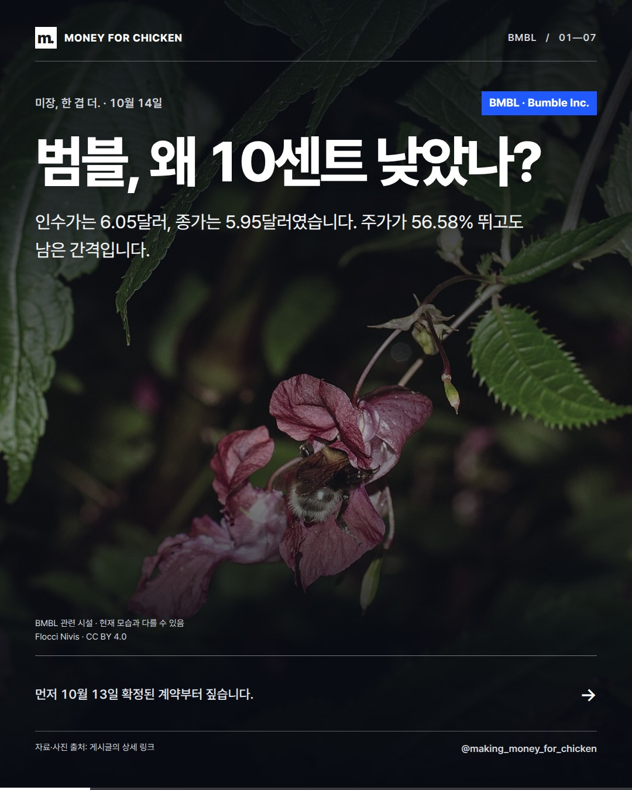
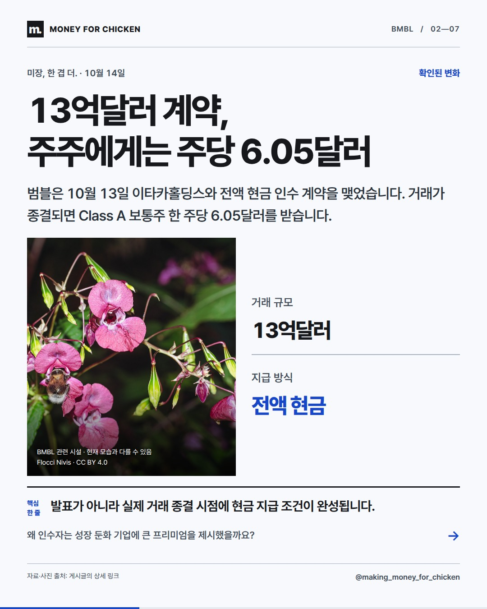
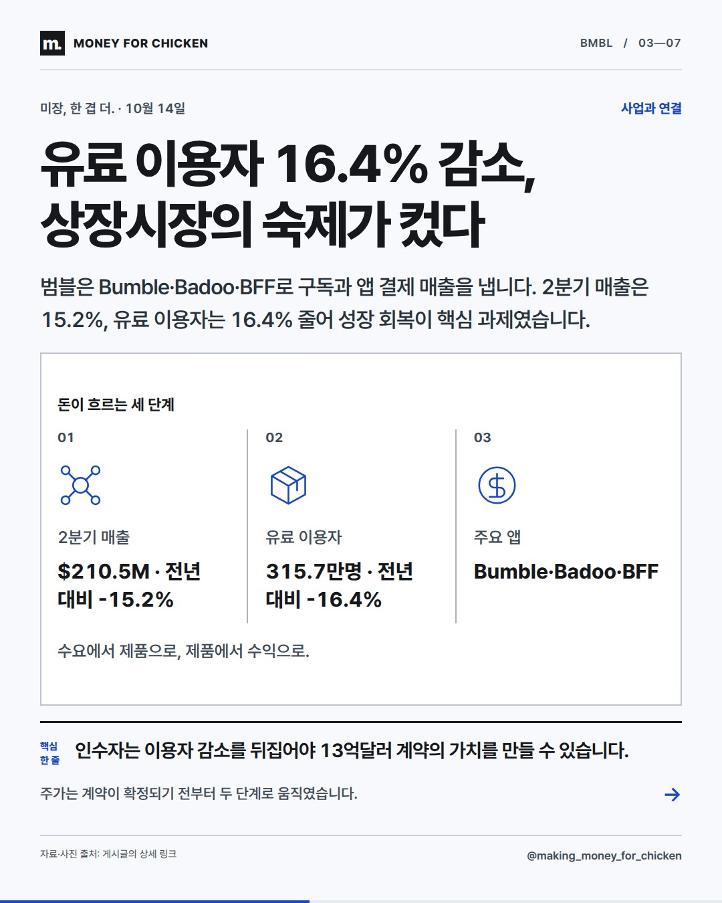
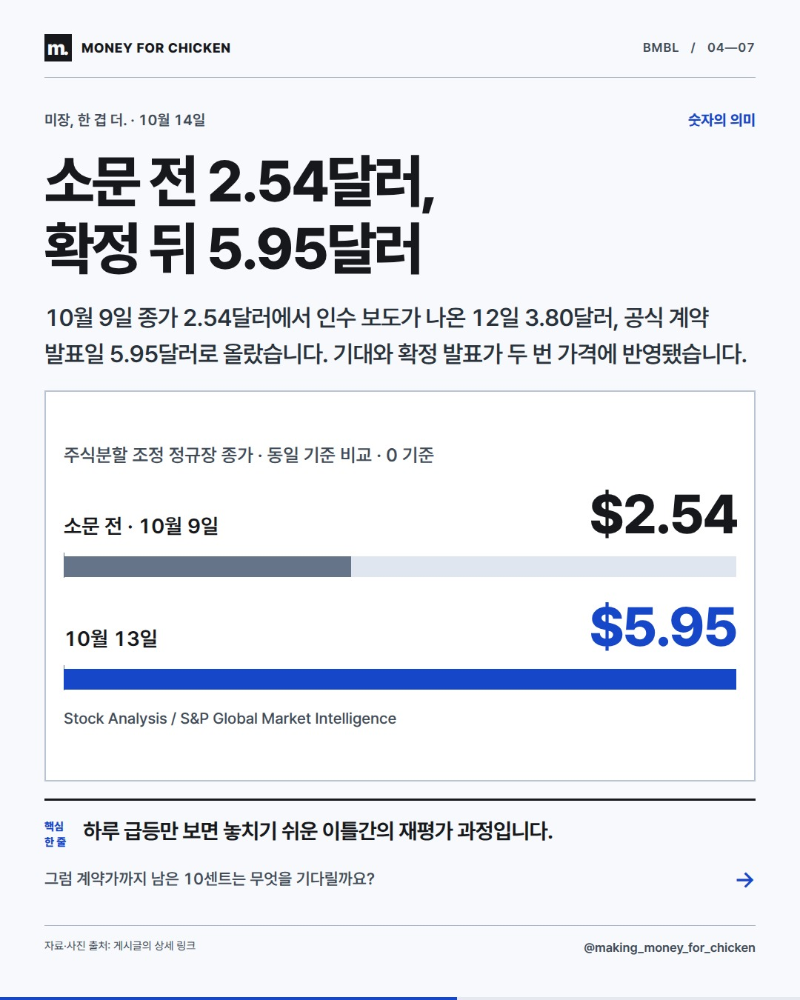
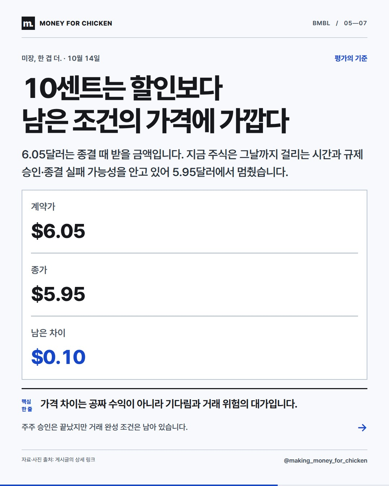
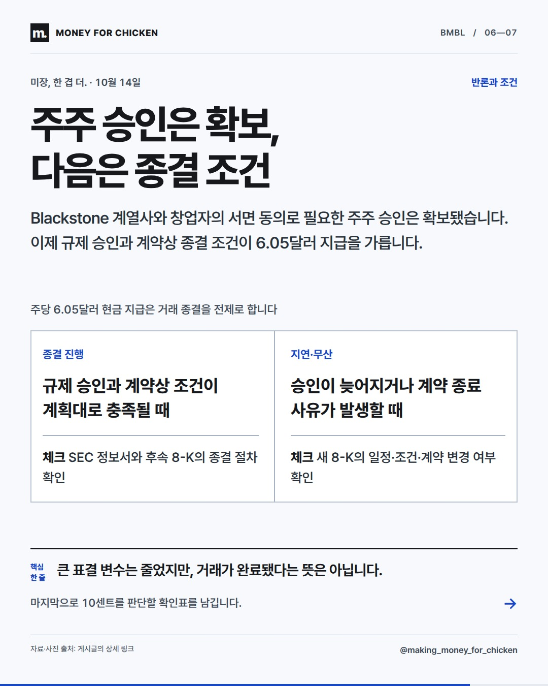
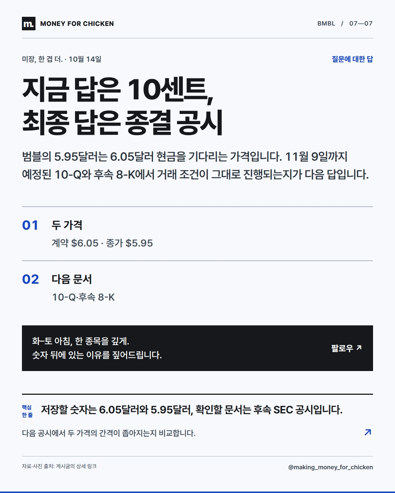

01 / 07
범블, 왜 10센트 낮았나?

인수가는 6.05달러, 종가는 5.95달러였습니다. 주가가 56.58% 뛰고도 남은 간격입니다.
10센트 차이는 거래가 아직 끝나지 않았다는 시장의 표시입니다.
먼저 10월 13일 확정된 계약부터 짚습니다.
미장, 한 겹 더. · 10월 14일
이타카의 현금 인수가는 주당 6.05달러지만 실제 지급은 거래 종결 뒤입니다. 5.95달러 종가와의 10센트 차이는 남은 승인·종결 조건과 기다리는 시간을 반영한 간격으로 볼 수 있습니다.
01 / 07

인수가는 6.05달러, 종가는 5.95달러였습니다. 주가가 56.58% 뛰고도 남은 간격입니다.
10센트 차이는 거래가 아직 끝나지 않았다는 시장의 표시입니다.
먼저 10월 13일 확정된 계약부터 짚습니다.
02 / 07

범블은 10월 13일 이타카홀딩스와 전액 현금 인수 계약을 맺었습니다. 거래가 종결되면 Class A 보통주 한 주당 6.05달러를 받습니다.
발표가 아니라 실제 거래 종결 시점에 현금 지급 조건이 완성됩니다.
왜 인수자는 성장 둔화 기업에 큰 프리미엄을 제시했을까요?
03 / 07

범블은 Bumble·Badoo·BFF로 구독과 앱 결제 매출을 냅니다. 2분기 매출은 15.2%, 유료 이용자는 16.4% 줄어 성장 회복이 핵심 과제였습니다.
인수자는 이용자 감소를 뒤집어야 13억달러 계약의 가치를 만들 수 있습니다.
주가는 계약이 확정되기 전부터 두 단계로 움직였습니다.
04 / 07

10월 9일 종가 2.54달러에서 인수 보도가 나온 12일 3.80달러, 공식 계약 발표일 5.95달러로 올랐습니다. 기대와 확정 발표가 두 번 가격에 반영됐습니다.
하루 급등만 보면 놓치기 쉬운 이틀간의 재평가 과정입니다.
그럼 계약가까지 남은 10센트는 무엇을 기다릴까요?
05 / 07

6.05달러는 종결 때 받을 금액입니다. 지금 주식은 그날까지 걸리는 시간과 규제 승인·종결 실패 가능성을 안고 있어 5.95달러에서 멈췄습니다.
가격 차이는 공짜 수익이 아니라 기다림과 거래 위험의 대가입니다.
주주 승인은 끝났지만 거래 완성 조건은 남아 있습니다.
06 / 07

Blackstone 계열사와 창업자의 서면 동의로 필요한 주주 승인은 확보됐습니다. 이제 규제 승인과 계약상 종결 조건이 6.05달러 지급을 가릅니다.
큰 표결 변수는 줄었지만, 거래가 완료됐다는 뜻은 아닙니다.
마지막으로 10센트를 판단할 확인표를 남깁니다.
07 / 07

범블의 5.95달러는 6.05달러 현금을 기다리는 가격입니다. 11월 9일까지 예정된 10-Q와 후속 8-K에서 거래 조건이 그대로 진행되는지가 다음 답입니다.
저장할 숫자는 6.05달러와 5.95달러, 확인할 문서는 후속 SEC 공시입니다.
다음 공시에서 두 가격의 간격이 좁아지는지 비교합니다.